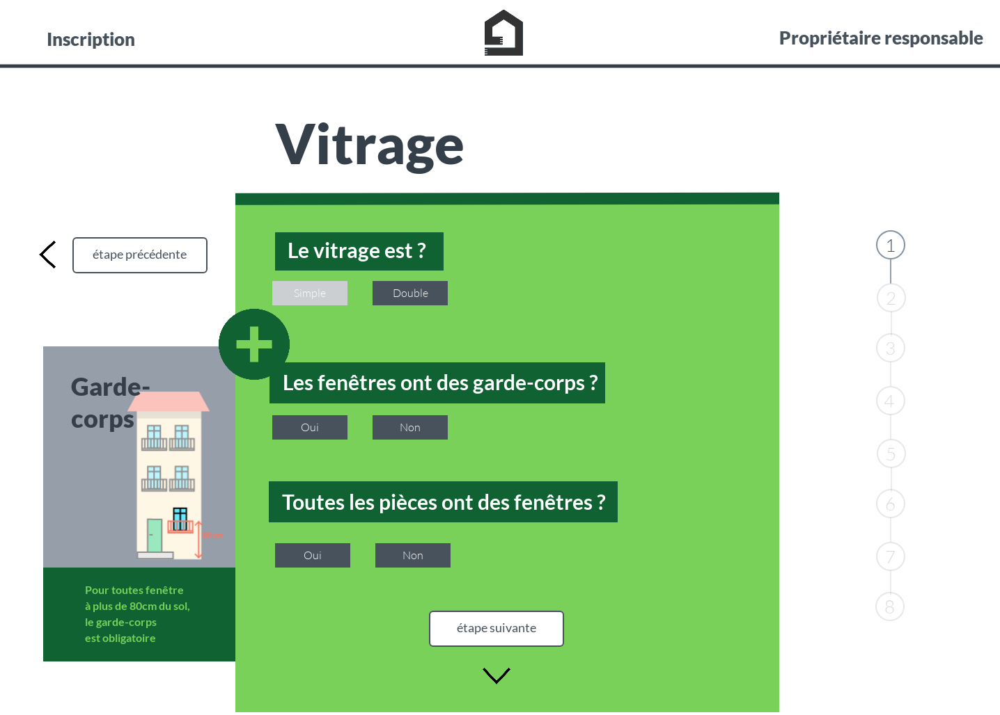

Project: 19th January 2019, participation in a Hackathon in Marseille initiated by Donut infolab association. During 48h, we had to find a numeric solution to fight against unfit housing. Since the collapse of two buildings on November the 5th, this is a big issue in Marseille; 2000 households had to leave their housing because of insecurity. The Hackathon’s participants were in 5 teams each with a different theme, one prototype per team have been done and introduced to a panel of experts at the end of the week-end.

Description:
Our team was made of : Benoît Guigal - Data engineer
Antoine Miceli - Frontend developer
Blandine - graphic designer
Our prototype, called Coach Appart, is a web site which made the user able to evaluate the decency of his/her housing according to objective criteria. It will give some suitable recommendations.
Purpose:
This project is for owners who aren’t well informed on decent and comfort criteria. Some owners could experience financial difficulties or could need help to fix their housing.
Coach Appart is a tool which help owners to assess his/her conformity housing according to its decency, to help them to prioritize the work to do, to contact artisans and into administrative and financial procedure.
This web site is preventive; the general purpose is to reassure the owner, fight against anxiety and vacant housing.
Layout on marvel
Github of the project
Wiki of the Hackathon